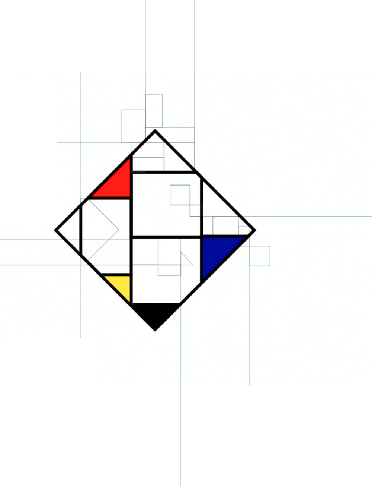
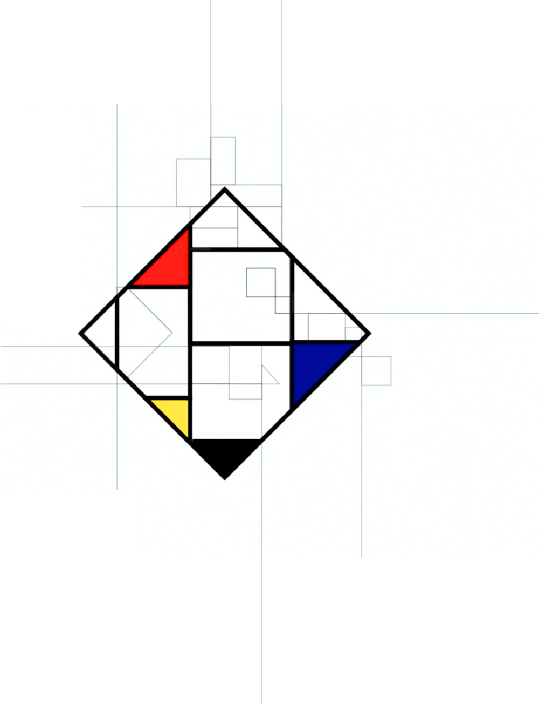

Design and concept of an interactive application
with the subject Piet Mondrian.
In a playful way the user can learn about his style
and try to abstract a painting himself. Moreover
he can discover information about Mondrain as
an artist, his life and De Stijl.
The whole design keeps close to Mondrians
colours, forms and abstract ways. The main menu
as well as the information graphics in the second
part are generated from one of Mondrains
paintings. Those transform a two-dimensional
avant-garde painting into a three-dimensional
interactive infographic.
 Transition">
Transition">